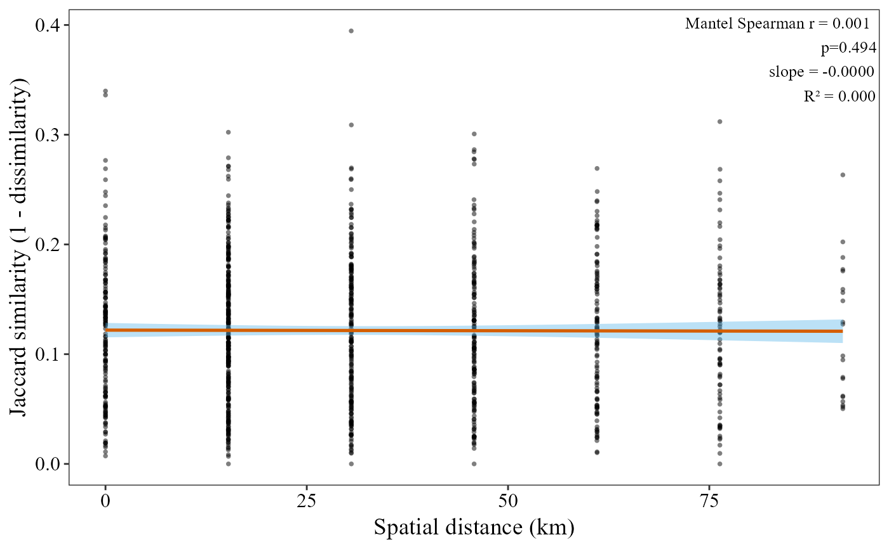
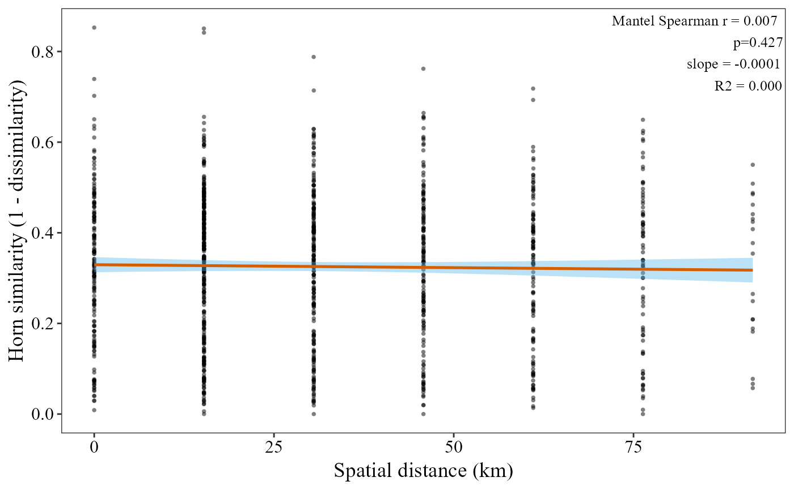
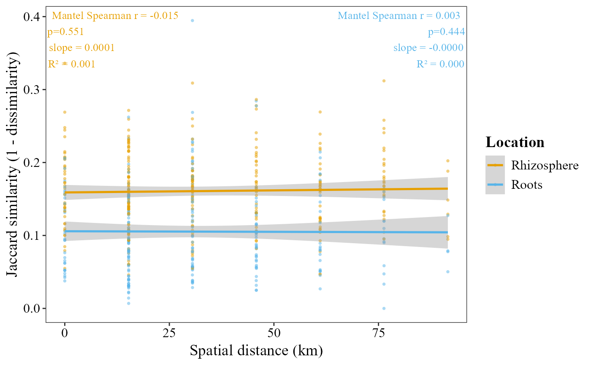

Computes pairwise community dissimilarity (Jaccard, Horn/Morisita-Horn,
Bray-Curtis, or other) and pairwise geographic distances from sample coordinates
stored in metadata. It runs a Mantel test to evaluate the
relationship between community similarity and geographic distance
Usage
beta_decay_plot(
table,
metadata,
lat_col,
lon_col,
group_col = NULL,
palette = "colorb",
distance = "jaccard",
method = "spearman",
permutations = 999,
show_lm_stats = TRUE,
point_color = "black",
line_color = "#D55E00",
point_size = 1,
point_alpha = 0.5,
annotation_size = 3.5,
x_axis_title = "Spatial distance (km)",
y_axis_title = NULL,
title = NULL
)Arguments
- table
A data frame with taxa in rows and samples in columns. The last column must be named
taxonomy, containing full taxonomic strings.- metadata
A data frame containing sample metadata. Must include a
SAMPLEIDcolumn matching sample names intable. Must also contain latitude and longitude columns- lat_col
Character. Name of the latitude column in
metadata(decimal degrees).- lon_col
Character. Name of the longitude column in
metadata(decimal degrees).- group_col
Character or
NULL. Optional categorical column inmetadata- palette
Only used when
group_colis supplied. Either a palette name ("colorb"default,"grey","viridis","brewer") or a vector of fixed colors, one per group level.- distance
Character. Dissimilarity metric passed to
vegan::vegdist. Common options:"jaccard"(default),"horn"(Morisita-Horn / Hill q = 1 analogue),"bray"(Bray-Curtis). Any method accepted byvegdistis valid. Case-insensitive.- method
Character. Correlation method for the Mantel test:
"spearman"(default) or"pearson". Case-insensitive.- permutations
Integer. Number of permutations for the Mantel test. Default
999.- show_lm_stats
Logical. If
TRUE(default), adds R2 to the annotation label in addition to the Mantel r, p-value, and slope.- point_color
Character. Color of scatter points. Default
"black".- line_color
Character. Color of the regression line. Default
"#D55E00".- point_size
Numeric. Size of scatter points. Default
1.- point_alpha
Numeric (0-1). Transparency of scatter points. Default
0.5.- annotation_size
Numeric. Font size for the stats annotation. Default
3.5.- x_axis_title
Character. X-axis label. Default
"Spatial distance (km)".- y_axis_title
Character or
NULL. Y-axis label. IfNULL(default), it is built automatically.- title
Character or
NULL. Plot title. DefaultNULL(no title).
Examples
table_path <- system.file("extdata", "tabla_bacteria.txt", package = "MicroBioMeta")
table <- read.delim(table_path, row.names = 1, check.names = FALSE)
metadata_path <- system.file("extdata", "metadata_bacteria.txt", package = "MicroBioMeta")
metadata <- read.delim(metadata_path, check.names = FALSE)
colnames(metadata)[1] <- "SampleID"
loc_coords <- data.frame(
Loc = 1:7,
lat = 19.0 + seq(0, 0.6, length.out = 7),
lon = -99.0 + seq(0, 0.6, length.out = 7)
)
metadata$lat <- loc_coords$lat[match(metadata$Loc, loc_coords$Loc)]
metadata$lon <- loc_coords$lon[match(metadata$Loc, loc_coords$Loc)]
# Jaccard + Spearman Mantel (default)
beta_decay_plot(
table = table,
metadata = metadata,
lat_col = "lat",
lon_col = "lon"
)

# Horn dissimilarity + Spearman Mantel
beta_decay_plot(
table = table,
metadata = metadata,
lat_col = "lat",
lon_col = "lon",
distance = "horn",
method = "spearman"
)

# Separate Mantel test per location
beta_decay_plot(
table = table,
metadata = metadata,
lat_col = "lat",
lon_col = "lon",
group_col = "Location"
)
